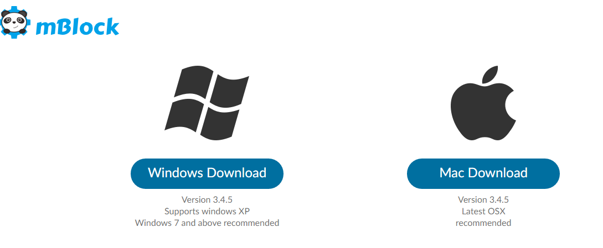
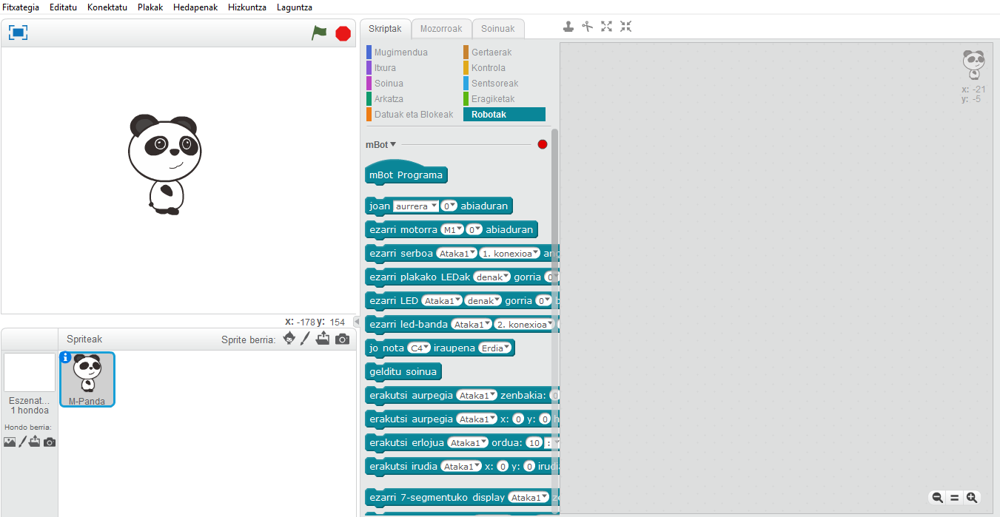
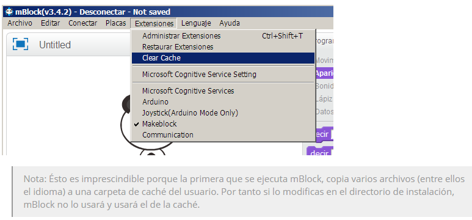
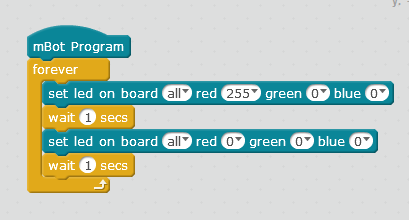
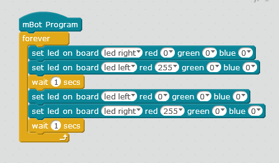
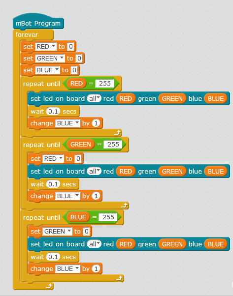
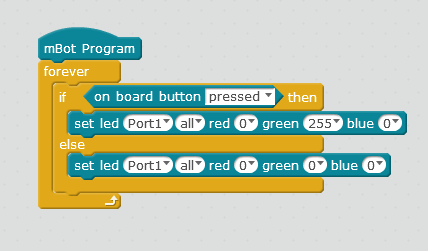
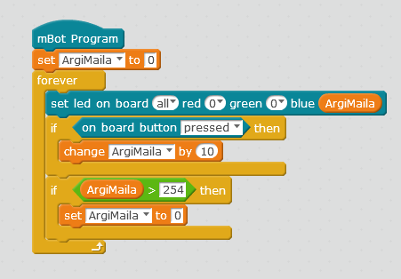

mBlock
Zer da mBlock?
Lehenago ere esan dugu MakeBlockekoek arduinon oinarritutako hardware bat sortu zutela, eta antzeko zerbait egin zuten softwarearekin. Scratchen oinarritutako mBlock softwarea sortu zuten.

Software honekin mBotaz gain arduino uno plaka ere programa daiteke. Ikastaro honetan mBot-a programatzen zentratuko gara. Asteko lehenik softwarea deskargatu eta zuen ordenagailutan instalatu beharko duzue (jada instalatu ez badago noski).
Azter dezagun mBlock!
Konturatzen bazarete mBlock eta Scratch berdin berdinak dira baina mBlock-ek agindu bloque berezi bat dauka "Robotak" delakoa.

Baliteke zuen programa euskeraz ez egotea. Euskeraz jarri nahi baduzue pausuak jarraitu:
- "Cachea" ezabatu
- 
- Programa itxi.
- mBlock/locale/locale.xlsx fitxategia beste honegaitik ordezkatu locale.xlsx
- mBlock zabaldu.
Progamazio lengoai gehienak ingelesarekin harreman eztua daukate, horregaitik ondorengo adibide eta ariketa guztiak ingelesez agertuko dira hizkuntza honetan erabiltzen den lengoai teknikoa lantzeko asmoz.
Ledak pizten
Lehenengo adibide hauetan mCore plakan bertan daukagun Led-ak pizten ikasiko dugu. mCore plaka basean bi RGB led ditugu "left led" eta "right led". RED GREEN ETA BLUE aldagaiak aldatzen edozein kolore lortu ahal duzue.
Programatu adibide bakoitza eta probatu mBot-era sartzen:
1. Blink LED: Adibide honetan ledak gorri jarriko dira eta itzali egingo dira. Baloreak aldatzen proba dezakezu.

2. Ezker-Eskuin: Kasu honetan lehenik ezkerrekoa eta gero eskuinekoa piztuko da.

3.Koloreekin jolasten- Adibide hau konplikatu zamarra da. Berau burutu ahal izateko lehenik 3 aldagai sortu behar dituzue, RED, GREEN eta BLUE deitu ditugunak. Saiatu hau egin eta ulertzen.

OnBoard Botoia
Oraingo adibide hauetan OnBoard botoia erabilzeko hainbat adibide ikusiko ditugu.
1. Argia piztu sakatzean

2.Botoiarekin argi maila aladatu

Obra publicada con Licencia Creative Commons Reconocimiento Compartir igual 4.0